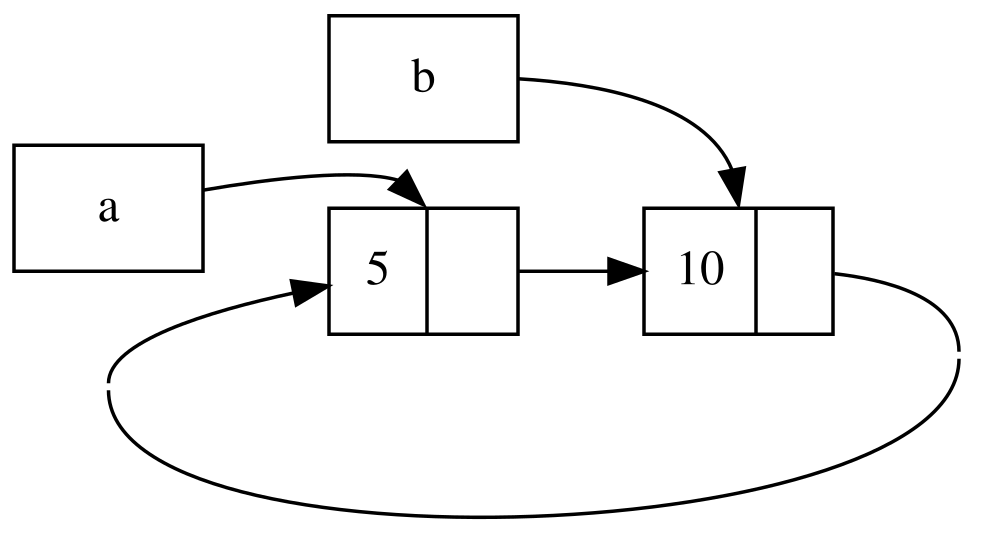

reference cycle মেমোরি leak করতে পারে
Rust-এর memory safety-র নিশ্চয়তা ভুল করে এমন মেমোরি তৈরি করা কঠিন করে, তবে অসম্ভব করে না, যা কখনো পরিষ্কার হয় না (একে বলে memory leak, মেমোরি ফুটো হয়ে যাওয়া)।
memory leak পুরোপুরি ঠেকানো Rust-এর নিশ্চয়তাগুলোর একটি নয়, অর্থাৎ Rust-এ memory leak মেমোরি-নিরাপদ। Rc<T> আর RefCell<T> ব্যবহার করে আমরা দেখতে পারি যে Rust
memory leak অনুমোদন করে: এমন reference তৈরি করা সম্ভব যেখানে item-গুলো একটি চক্রে একে অপরকে নির্দেশ করে। এতে memory leak হয়, কারণ চক্রের প্রতিটি item-এর
reference count কখনো 0-তে পৌঁছাবে না, আর মানগুলো কখনো drop হবে না।
একটি reference cycle তৈরি করা
চলুন দেখি একটি reference cycle কীভাবে ঘটতে পারে এবং কীভাবে তা ঠেকানো যায়, শুরু করব Listing
15-25-এর List enum-এর সংজ্ঞা আর একটি tail method দিয়ে।
use crate::List::{Cons, Nil};
use std::cell::RefCell;
use std::rc::Rc;
#[derive(Debug)]
enum List {
Cons(i32, RefCell<Rc<List>>),
Nil,
}
impl List {
fn tail(&self) -> Option<&RefCell<Rc<List>>> {
match self {
Cons(_, item) => Some(item),
Nil => None,
}
}
}
fn main() {}RefCell<T>-যুক্ত cons list-এর সংজ্ঞা, যাতে একটি Cons variant কাকে নির্দেশ করছে তা পরিবর্তন করা যায়আমরা Listing 15-5-এর List-এর সংজ্ঞার আরেকটি রূপ ব্যবহার করছি। Cons variant-এর দ্বিতীয় উপাদান এখন RefCell<Rc<List>>, অর্থাৎ Listing
15-24-এর মতো i32 মান পরিবর্তনের ক্ষমতার বদলে আমরা চাই একটি Cons variant যে List মানকে নির্দেশ করছে তা পরিবর্তন করতে।
একটি Cons variant থাকলে দ্বিতীয় item-টি সহজে পেতে আমরা একটি tail method-ও যোগ করছি।
Listing 15-26-এ আমরা একটি main function যোগ করছি, যা Listing 15-25-এর সংজ্ঞাগুলো ব্যবহার করে। এই কোড a-তে একটি তালিকা আর b-তে এমন একটি তালিকা তৈরি করে যা
a-এর তালিকাকে নির্দেশ করে। তারপর a-এর তালিকা পরিবর্তন করে b-কে নির্দেশ করায়, ফলে একটি reference cycle তৈরি হয়। এই প্রক্রিয়ার বিভিন্ন পর্যায়ে reference count কত
তা দেখাতে পথে পথে println! statement আছে।
use crate::List::{Cons, Nil};
use std::cell::RefCell;
use std::rc::Rc;
#[derive(Debug)]
enum List {
Cons(i32, RefCell<Rc<List>>),
Nil,
}
impl List {
fn tail(&self) -> Option<&RefCell<Rc<List>>> {
match self {
Cons(_, item) => Some(item),
Nil => None,
}
}
}
fn main() {
let a = Rc::new(Cons(5, RefCell::new(Rc::new(Nil))));
println!("a initial rc count = {}", Rc::strong_count(&a));
println!("a next item = {:?}", a.tail());
let b = Rc::new(Cons(10, RefCell::new(Rc::clone(&a))));
println!("a rc count after b creation = {}", Rc::strong_count(&a));
println!("b initial rc count = {}", Rc::strong_count(&b));
println!("b next item = {:?}", b.tail());
if let Some(link) = a.tail() {
*link.borrow_mut() = Rc::clone(&b);
}
println!("b rc count after changing a = {}", Rc::strong_count(&b));
println!("a rc count after changing a = {}", Rc::strong_count(&a));
// চক্র যে আছে তা দেখতে পরের লাইনের comment সরিয়ে দিন;
// এতে stack overflow হবে।
// println!("a next item = {:?}", a.tail());
}List মানের একটি reference cycle তৈরি করাআমরা a variable-এ 5, Nil প্রাথমিক তালিকাসহ একটি List মান রাখা একটি Rc<List> instance তৈরি করি। তারপর b variable-এ আরেকটি List মান রাখা একটি Rc<List>
instance তৈরি করি, যাতে 10 মান আছে এবং যা a-এর তালিকাকে নির্দেশ করে।
আমরা a পরিবর্তন করি, যাতে এটি Nil-এর বদলে b-কে নির্দেশ করে, ফলে একটি চক্র তৈরি হয়। এটা করি tail method ব্যবহার করে a-এর
RefCell<Rc<List>>-এর একটি reference নিয়ে, যা link variable-এ রাখি। তারপর RefCell<Rc<List>>-এর ওপর borrow_mut method ব্যবহার করে ভেতরের মান Nil মান রাখা
একটি Rc<List> থেকে বদলে b-এর Rc<List> করি।
আপাতত শেষ println!-টি comment করে রেখে এই কোড চালালে এই output পাব:
$ cargo run
Compiling cons-list v0.1.0 (file:///projects/cons-list)
Finished `dev` profile [unoptimized + debuginfo] target(s) in 0.53s
Running `target/debug/cons-list`
a initial rc count = 1
a next item = Some(RefCell { value: Nil })
a rc count after b creation = 2
b initial rc count = 1
b next item = Some(RefCell { value: Cons(5, RefCell { value: Nil }) })
b rc count after changing a = 2
a rc count after changing a = 2
a-এর তালিকা বদলে b-কে নির্দেশ করানোর পর a আর b দুটির Rc<List> instance-এর reference count 2। main-এর শেষে Rust b variable drop করে, যা b-এর Rc<List>
instance-এর reference count 2 থেকে 1-এ নামিয়ে আনে। Rc<List>-এর heap-এর মেমোরি এই মুহূর্তে drop হবে না, কারণ এর reference count 1, 0 নয়। তারপর Rust a drop করে,
যা a-এর Rc<List> instance-এর reference count-ও 2 থেকে 1-এ নামায়। এই instance-এর মেমোরিও drop করা যায় না, কারণ অন্য Rc<List> instance এখনো একে নির্দেশ করছে।
তালিকার জন্য allocate করা মেমোরি চিরকাল অসংগৃহীত থেকে যাবে। এই reference cycle চোখে দেখাতে আমরা Figure 15-4-এর diagram তৈরি করেছি।

Figure 15-4: একে অপরকে নির্দেশ করা a আর b তালিকার
একটি reference cycle
শেষ println!-এর comment সরিয়ে প্রোগ্রাম চালালে Rust এই চক্রটি print করার চেষ্টা করবে, a নির্দেশ করে b-কে, যা আবার নির্দেশ করে a-কে, এভাবে চলতে চলতে stack
overflow (stack-এর জায়গা ফুরিয়ে যাওয়া) হবে।
বাস্তব জীবনের একটি প্রোগ্রামের তুলনায় এই উদাহরণে reference cycle তৈরির পরিণাম খুব একটা গুরুতর নয়: reference cycle তৈরি করার ঠিক পরেই প্রোগ্রাম শেষ হয়ে যায়। কিন্তু আরও জটিল কোনো প্রোগ্রাম যদি একটি চক্রে অনেক মেমোরি allocate করে দীর্ঘ সময় ধরে রাখত, তাহলে প্রোগ্রামটি প্রয়োজনের চেয়ে বেশি মেমোরি ব্যবহার করত এবং হয়তো system-কে অতিরিক্ত চাপে ফেলত, ফলে উপলব্ধ মেমোরি ফুরিয়ে যেত।
reference cycle তৈরি করা সহজ নয়, তবে অসম্ভবও নয়। আপনার কাছে যদি Rc<T> মান রাখা RefCell<T> মান থাকে, বা interior mutability আর reference counting-যুক্ত
type-এর অনুরূপ nested সমন্বয় থাকে, তাহলে আপনাকে নিশ্চিত করতে হবে যে চক্র তৈরি করছেন না; Rust এগুলো ধরে ফেলবে এমন ভরসা রাখা যায় না। reference cycle তৈরি করা হবে
আপনার প্রোগ্রামের একটি logic বাগ, যা কমাতে আপনার স্বয়ংক্রিয় test, code review আর software development-এর অন্যান্য চর্চা ব্যবহার করা উচিত।
reference cycle এড়ানোর আরেকটি সমাধান হলো data structure এমনভাবে নতুন করে সাজানো, যাতে কিছু reference ownership প্রকাশ করে আর কিছু করে না। ফলে কিছু ownership
সম্পর্ক আর কিছু ownership-বিহীন সম্পর্ক দিয়ে চক্র তৈরি হতে পারে, এবং শুধু ownership সম্পর্কই ঠিক করে একটি মান drop করা যাবে কি না। Listing 15-25-এ আমরা সবসময় চাই
Cons variant তার তালিকার মালিক হোক, তাই data structure নতুন করে সাজানো সম্ভব নয়। চলুন parent node আর child node দিয়ে তৈরি graph ব্যবহার করা একটি উদাহরণ দেখি,
যাতে বোঝা যায় কখন ownership-বিহীন সম্পর্ক reference cycle ঠেকানোর উপযুক্ত উপায়।
Weak<T> দিয়ে reference cycle ঠেকানো
এ পর্যন্ত আমরা দেখিয়েছি যে Rc::clone call করলে একটি Rc<T> instance-এর strong_count বাড়ে, আর একটি Rc<T> instance কেবল তখনই পরিষ্কার হয় যখন এর
strong_count 0। Rc::downgrade call করে এবং Rc<T>-এর একটি reference পাঠিয়ে একটি Rc<T> instance-এর ভেতরের মানের একটি weak reference-ও তৈরি করা যায়।
Strong references (strong reference) দিয়ে আপনি একটি Rc<T> instance-এর ownership ভাগ করে নিতে পারেন। Weak references (weak reference) কোনো ownership সম্পর্ক
প্রকাশ করে না, আর এদের count ঠিক করে না কখন একটি Rc<T> instance পরিষ্কার হবে। এরা reference cycle ঘটাবে না, কারণ কিছু weak reference জড়িত যেকোনো চক্র ভেঙে
যাবে, যখনই জড়িত মানগুলোর strong reference count 0 হবে।
Rc::downgrade call করলে আপনি Weak<T> type-এর একটি smart pointer পান। Rc<T> instance-এর strong_count 1 বাড়ানোর বদলে Rc::downgrade call করলে weak_count
1 বাড়ে। strong_count-এর মতোই কতগুলো Weak<T> reference আছে তার হিসাব রাখতে Rc<T> type weak_count ব্যবহার করে। পার্থক্য হলো, Rc<T> instance পরিষ্কার হতে
weak_count-কে 0 হতে হয় না।
Weak<T> যে মানকে নির্দেশ করে তা হয়তো ইতিমধ্যে drop হয়ে গেছে, তাই একটি Weak<T> যে মানকে নির্দেশ করছে তা দিয়ে কিছু করতে হলে আপনাকে নিশ্চিত করতে হবে যে মানটি
এখনো আছে। এটা করুন একটি Weak<T> instance-এর ওপর upgrade method call করে, যা একটি Option<Rc<T>> return করবে। Rc<T> মান এখনো drop না হয়ে থাকলে ফল পাবেন
Some, আর Rc<T> মান drop হয়ে গিয়ে থাকলে ফল পাবেন None। upgrade যেহেতু একটি Option<Rc<T>> return করে, তাই Rust নিশ্চিত করবে যে Some আর None, দুটি
ক্ষেত্রই সামলানো হয়েছে, আর কোনো অবৈধ pointer থাকবে না।
উদাহরণ হিসেবে, এমন তালিকা ব্যবহার না করে যার item-গুলো শুধু পরের item সম্পর্কে জানে, আমরা এমন একটি tree (গাছের মতো কাঠামো) তৈরি করব যার item-গুলো তাদের child item এবং parent item সম্পর্কে জানে।
একটি tree data structure তৈরি করা
শুরুতে আমরা এমন node-যুক্ত একটি tree বানাব, যারা তাদের child node সম্পর্কে জানে। আমরা Node নামের একটি struct তৈরি করব, যা নিজের একটি i32 মান আর তার child Node
মানগুলোর reference রাখে:
Filename: src/main.rs
use std::cell::RefCell;
use std::rc::Rc;
#[derive(Debug)]
struct Node {
value: i32,
children: RefCell<Vec<Rc<Node>>>,
}
fn main() {
let leaf = Rc::new(Node {
value: 3,
children: RefCell::new(vec![]),
});
let branch = Rc::new(Node {
value: 5,
children: RefCell::new(vec![Rc::clone(&leaf)]),
});
}আমরা চাই একটি Node তার child-দের মালিক হোক, আর সেই ownership variable-এর সঙ্গে ভাগ করে নিতে চাই, যাতে tree-র প্রতিটি Node সরাসরি পেতে পারি। এজন্য Vec<T>-এর
item-গুলোকে Rc<Node> type-এর মান হিসেবে সংজ্ঞায়িত করি। কোন node আরেকটি node-এর child তা-ও আমরা পরিবর্তন করতে চাই, তাই children-এ Vec<Rc<Node>>-এর চারপাশে
একটি RefCell<T> রাখি।
এরপর আমাদের struct-এর সংজ্ঞা ব্যবহার করে 3 মানের এবং কোনো child ছাড়া leaf নামের একটি Node instance, আর 5 মানের এবং leaf-কে একটি child হিসেবে রাখা
branch নামের আরেকটি instance তৈরি করব, যেমনটি Listing 15-27-এ দেখানো হয়েছে।
use std::cell::RefCell;
use std::rc::Rc;
#[derive(Debug)]
struct Node {
value: i32,
children: RefCell<Vec<Rc<Node>>>,
}
fn main() {
let leaf = Rc::new(Node {
value: 3,
children: RefCell::new(vec![]),
});
let branch = Rc::new(Node {
value: 5,
children: RefCell::new(vec![Rc::clone(&leaf)]),
});
}leaf node আর leaf-কে একটি child হিসেবে রাখা একটি branch node তৈরি করাআমরা leaf-এর Rc<Node> clone করে branch-এ রাখি, অর্থাৎ leaf-এর Node-এর এখন দুজন owner: leaf আর branch। branch.children দিয়ে branch থেকে leaf-এ
যাওয়া যায়, কিন্তু leaf থেকে branch-এ যাওয়ার কোনো উপায় নেই। কারণ leaf-এর কাছে branch-এর কোনো reference নেই, আর এটি জানে না যে তারা সম্পর্কিত। আমরা চাই
leaf জানুক যে branch তার parent। এরপর আমরা সেটাই করব।
child থেকে তার parent-এর দিকে একটি reference যোগ করা
child node-কে তার parent সম্পর্কে জানাতে আমাদের Node struct-এর সংজ্ঞায় একটি parent field যোগ করতে হবে। সমস্যা হলো parent-এর type কী হওয়া উচিত তা ঠিক করা।
আমরা জানি এতে একটি Rc<T> রাখা যাবে না, কারণ তাতে leaf.parent branch-কে আর branch.children leaf-কে নির্দেশ করে একটি reference cycle তৈরি হবে, ফলে তাদের
strong_count মান কখনো 0 হবে না।
সম্পর্কগুলোকে অন্যভাবে ভাবলে, একটি parent node তার child-দের মালিক হওয়া উচিত: একটি parent node drop হলে তার child node-গুলোও drop হওয়া উচিত। কিন্তু একটি child তার parent-এর মালিক হওয়া উচিত নয়: একটি child node drop করলে parent তখনো থাকা উচিত। এটি weak reference-এর ক্ষেত্র!
তাই Rc<T>-এর বদলে আমরা parent-এর type-এ Weak<T> ব্যবহার করব, নির্দিষ্ট করে বললে একটি RefCell<Weak<Node>>। এখন আমাদের Node struct-এর সংজ্ঞা দেখতে এমন:
Filename: src/main.rs
use std::cell::RefCell;
use std::rc::{Rc, Weak};
#[derive(Debug)]
struct Node {
value: i32,
parent: RefCell<Weak<Node>>,
children: RefCell<Vec<Rc<Node>>>,
}
fn main() {
let leaf = Rc::new(Node {
value: 3,
parent: RefCell::new(Weak::new()),
children: RefCell::new(vec![]),
});
println!("leaf parent = {:?}", leaf.parent.borrow().upgrade());
let branch = Rc::new(Node {
value: 5,
parent: RefCell::new(Weak::new()),
children: RefCell::new(vec![Rc::clone(&leaf)]),
});
*leaf.parent.borrow_mut() = Rc::downgrade(&branch);
println!("leaf parent = {:?}", leaf.parent.borrow().upgrade());
}একটি node তার parent node-কে নির্দেশ করতে পারবে, কিন্তু তার parent-এর মালিক হবে না। Listing 15-28-এ আমরা এই নতুন সংজ্ঞা ব্যবহার করতে main হালনাগাদ করি, যাতে
leaf node-এর তার parent branch-কে নির্দেশ করার একটি উপায় থাকে।
use std::cell::RefCell;
use std::rc::{Rc, Weak};
#[derive(Debug)]
struct Node {
value: i32,
parent: RefCell<Weak<Node>>,
children: RefCell<Vec<Rc<Node>>>,
}
fn main() {
let leaf = Rc::new(Node {
value: 3,
parent: RefCell::new(Weak::new()),
children: RefCell::new(vec![]),
});
println!("leaf parent = {:?}", leaf.parent.borrow().upgrade());
let branch = Rc::new(Node {
value: 5,
parent: RefCell::new(Weak::new()),
children: RefCell::new(vec![Rc::clone(&leaf)]),
});
*leaf.parent.borrow_mut() = Rc::downgrade(&branch);
println!("leaf parent = {:?}", leaf.parent.borrow().upgrade());
}branch-এর একটি weak reference-সহ একটি leaf nodeleaf node তৈরি করা Listing 15-27-এর মতোই দেখায়, শুধু parent field ছাড়া: leaf শুরু হয় parent ছাড়া, তাই আমরা একটি নতুন, খালি Weak<Node> reference instance তৈরি
করি।
এই পর্যায়ে upgrade method ব্যবহার করে leaf-এর parent-এর একটি reference নেওয়ার চেষ্টা করলে একটি None মান পাই। প্রথম println! statement-এর output-এ এটি দেখি:
leaf parent = None
branch node তৈরি করলে এর parent field-এও একটি নতুন Weak<Node> reference থাকবে, কারণ branch-এর কোনো parent node নেই। leaf তখনো branch-এর child-দের একটি।
branch-এ Node instance পেয়ে গেলে আমরা leaf পরিবর্তন করে তাকে তার parent-এর একটি Weak<Node> reference দিতে পারি। leaf-এর parent field-এর
RefCell<Weak<Node>>-এর ওপর borrow_mut method ব্যবহার করি, তারপর branch-এর Rc<Node> থেকে branch-এর একটি Weak<Node> reference তৈরি করতে Rc::downgrade
function ব্যবহার করি।
আবার leaf-এর parent print করলে এবার branch রাখা একটি Some variant পাব: এখন leaf তার parent-কে পেতে পারে! leaf print করলে Listing 15-26-এ যেমন চক্রটি শেষ পর্যন্ত
stack overflow-এ শেষ হয়েছিল, তা-ও এড়ানো যায়; Weak<Node> reference-গুলো print হয় (Weak) হিসেবে:
leaf parent = Some(Node { value: 5, parent: RefCell { value: (Weak) },
children: RefCell { value: [Node { value: 3, parent: RefCell { value: (Weak) },
children: RefCell { value: [] } }] } })
অসীম output না থাকা বোঝায় যে এই কোড কোনো reference cycle তৈরি করেনি। Rc::strong_count আর Rc::weak_count call করে পাওয়া মানগুলো দেখেও এটি বোঝা যায়।
strong_count ও weak_count-এর পরিবর্তন চোখে দেখা
চলুন একটি নতুন ভেতরের scope তৈরি করে এবং branch তৈরির কাজ সেই scope-এ সরিয়ে দেখি Rc<Node> instance-গুলোর strong_count আর weak_count মান কীভাবে বদলায়। এতে
দেখা যাবে branch তৈরি হলে আর scope-এর বাইরে গিয়ে drop হলে কী ঘটে। পরিবর্তনগুলো Listing 15-29-এ দেখানো হয়েছে।
use std::cell::RefCell;
use std::rc::{Rc, Weak};
#[derive(Debug)]
struct Node {
value: i32,
parent: RefCell<Weak<Node>>,
children: RefCell<Vec<Rc<Node>>>,
}
fn main() {
let leaf = Rc::new(Node {
value: 3,
parent: RefCell::new(Weak::new()),
children: RefCell::new(vec![]),
});
println!(
"leaf strong = {}, weak = {}",
Rc::strong_count(&leaf),
Rc::weak_count(&leaf),
);
{
let branch = Rc::new(Node {
value: 5,
parent: RefCell::new(Weak::new()),
children: RefCell::new(vec![Rc::clone(&leaf)]),
});
*leaf.parent.borrow_mut() = Rc::downgrade(&branch);
println!(
"branch strong = {}, weak = {}",
Rc::strong_count(&branch),
Rc::weak_count(&branch),
);
println!(
"leaf strong = {}, weak = {}",
Rc::strong_count(&leaf),
Rc::weak_count(&leaf),
);
}
println!("leaf parent = {:?}", leaf.parent.borrow().upgrade());
println!(
"leaf strong = {}, weak = {}",
Rc::strong_count(&leaf),
Rc::weak_count(&leaf),
);
}branch তৈরি করে strong ও weak reference count পরীক্ষা করাleaf তৈরি হওয়ার পর এর Rc<Node>-এর strong count 1 আর weak count 0। ভেতরের scope-এ আমরা branch তৈরি করে leaf-এর সঙ্গে যুক্ত করি, তখন count print করলে branch-এর
Rc<Node>-এর strong count হবে 1 আর weak count হবে 1 (leaf.parent একটি Weak<Node> দিয়ে branch-কে নির্দেশ করছে বলে)। leaf-এর count print করলে দেখব এর strong
count 2, কারণ branch এখন branch.children-এ leaf-এর Rc<Node>-এর একটি clone রেখেছে, তবে weak count তখনো 0।
ভেতরের scope শেষ হলে branch scope-এর বাইরে যায় এবং Rc<Node>-এর strong count কমে 0 হয়, তাই এর Node drop হয়ে যায়। leaf.parent-এর 1 weak count Node drop হবে কি
না তাতে কোনো প্রভাব ফেলে না, তাই আমাদের কোনো memory leak হয় না!
scope শেষ হওয়ার পর leaf-এর parent পেতে চেষ্টা করলে আবার None পাব। প্রোগ্রামের শেষে leaf-এর Rc<Node>-এর strong count 1 আর weak count 0, কারণ leaf variable
আবার Rc<Node>-এর একমাত্র reference।
count আর মান drop সামলানোর সব logic Rc<T> আর Weak<T>-এর ভেতরে এবং তাদের Drop trait-এর implementation-এ তৈরি করা আছে। Node-এর সংজ্ঞায় child থেকে তার
parent-এর সম্পর্ক একটি Weak<T> reference হবে বলে উল্লেখ করে আপনি reference cycle ও memory leak তৈরি না করেই parent node-কে child node-এর দিকে আর child node-কে
parent node-এর দিকে নির্দেশ করাতে পারেন।
সারসংক্ষেপ
এই অধ্যায়ে দেখানো হয়েছে কীভাবে smart pointer ব্যবহার করে সাধারণ reference-এর সঙ্গে Rust default-ভাবে যে নিশ্চয়তা ও আপস দেয় তার থেকে ভিন্ন নিশ্চয়তা ও আপস পাওয়া যায়।
Box<T> type-এর আকার জানা এবং এটি heap-এ allocate করা ডেটাকে নির্দেশ করে। Rc<T> type heap-এর ডেটার reference-এর সংখ্যা হিসাব রাখে, যাতে ডেটার একাধিক owner থাকতে
পারে। interior mutability-সহ RefCell<T> type আমাদের এমন একটি type দেয়, যা ব্যবহার করা যায় যখন একটি immutable type দরকার কিন্তু সেই type-এর ভেতরের একটি মান
বদলাতে হবে; এটি borrowing-এর নিয়ম compile time-এর বদলে runtime-এ প্রয়োগ করে।
Deref আর Drop trait নিয়েও আলোচনা হয়েছে, যা smart pointer-এর অনেক কার্যক্ষমতা সম্ভব করে। আমরা দেখেছি reference cycle কীভাবে memory leak ঘটাতে পারে, এবং
Weak<T> দিয়ে কীভাবে তা ঠেকানো যায়।
এই অধ্যায় যদি আপনার আগ্রহ জাগিয়ে থাকে এবং আপনি নিজস্ব smart pointer implement করতে চান, তাহলে আরও কাজের তথ্যের জন্য “The Rustonomicon” দেখুন।
এরপর আমরা Rust-এ concurrency নিয়ে কথা বলব। এমনকি কয়েকটি নতুন smart pointer সম্পর্কেও জানবেন।